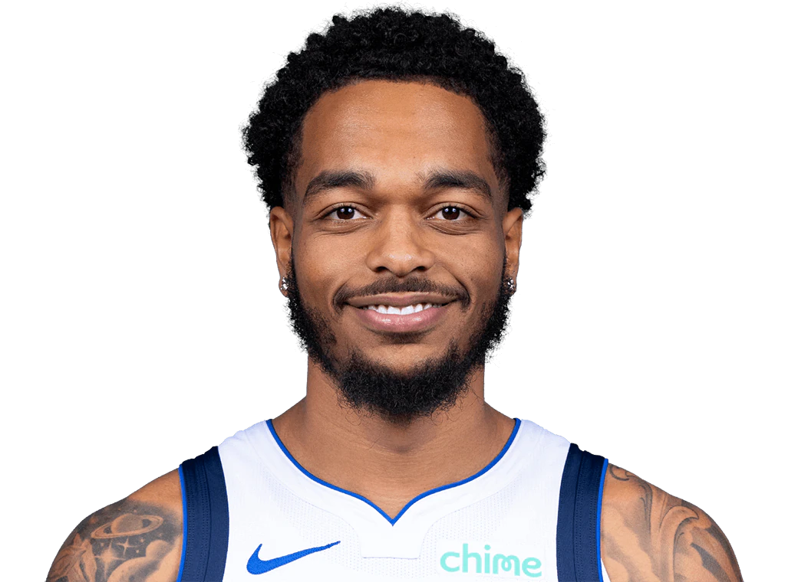
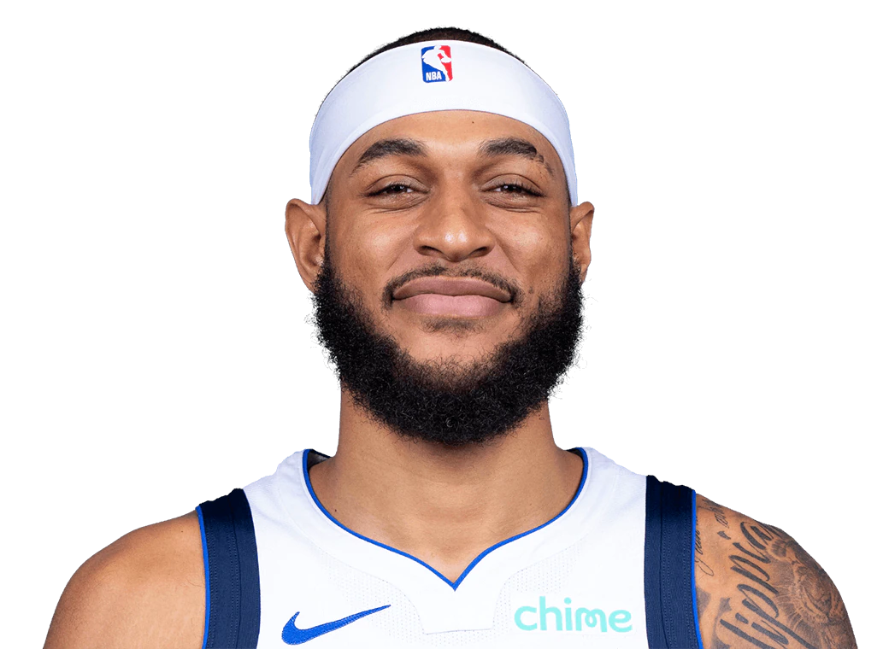
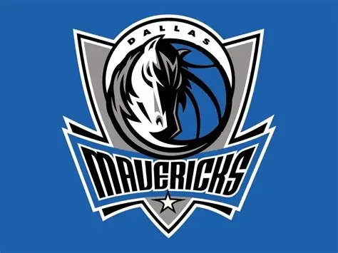
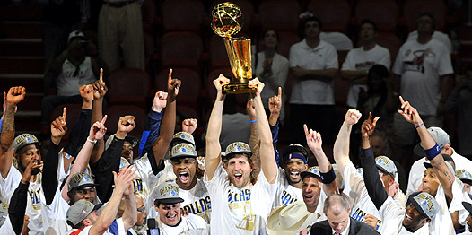
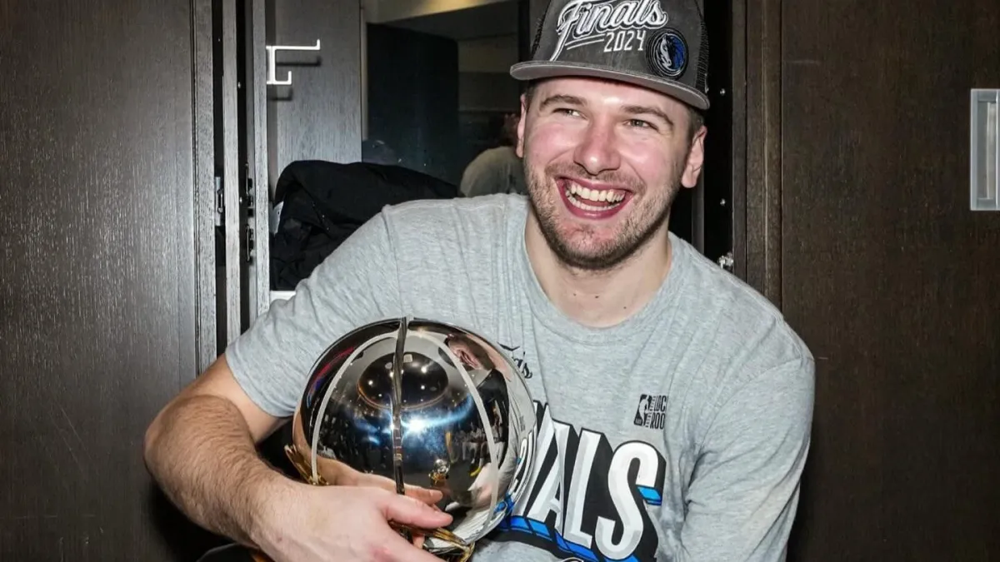
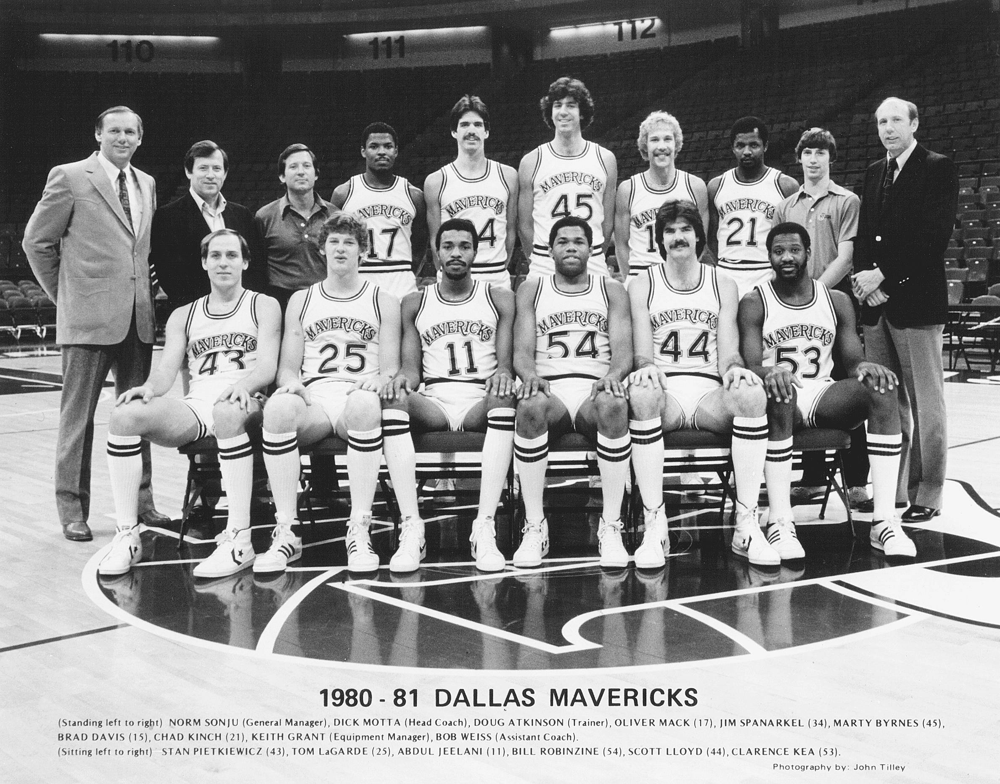

Jogadores Titulares

Cooper Flag
Armador

Kyrie Irving
Armador

Klay Thompson
Ala

P.J. Washington
Ala-pivô
Dereck Lively II
Pivô

Daniel Gafford
Pivô

O Dallas Mavericks é uma equipe profissional de basquete da National Basketball Association (NBA) sediada em Dallas, nos Estados Unidos. Fundado em 1980, o time se consolidou ao longo das décadas como uma das franquias mais respeitadas da liga, conhecido por sua torcida apaixonada, estilo competitivo e pela presença de grandes estrelas do basquete mundial. Ao longo de sua história, os Mavericks passaram por diferentes fases de reconstrução e sucesso, construindo uma identidade marcada pela perseverança e pelo desenvolvimento de talentos. O maior momento da franquia aconteceu na temporada 2010–2011, quando o Dallas Mavericks conquistou seu primeiro título da NBA, liderado pelo lendário Dirk Nowitzki, considerado o maior jogador da história do clube. Atualmente, a equipe vive uma nova era comandada pelo astro esloveno Luka Dončić, que representa a continuidade da tradição competitiva da franquia. Com uma trajetória marcada por evolução constante, momentos históricos e jogadores icônicos, os Mavericks seguem sendo uma das equipes mais relevantes e populares do basquete profissional.
O Dallas Mavericks é uma das franquias mais marcantes da National Basketball Association (NBA), conhecido por sua trajetória de crescimento, superação e momentos históricos no basquete norte-americano. O time foi fundado em 1980, na cidade de Dallas, e rapidamente passou a fazer parte da cultura esportiva da região. Nos primeiros anos, a equipe enfrentou dificuldades comuns a times de expansão, tentando construir um elenco competitivo e consolidar sua identidade dentro da liga. Ainda assim, já na década de 1980 os Mavericks começaram a mostrar potencial, chegando às finais da Conferência Oeste em 1988, liderados por jogadores importantes como Mark Aguirre, Rolando Blackman e Derek Harper. Após esse período promissor, a franquia passou por anos difíceis durante a década de 1990, com campanhas fracas e constantes mudanças no elenco. A situação começou a mudar no início dos anos 2000, quando o empresário Mark Cuban comprou o time em 2000 e investiu fortemente em estrutura, marketing e competitividade. Nesse período surgiu o principal nome da história da franquia: Dirk Nowitzki, ala-pivô alemão que revolucionou a posição com sua habilidade de arremesso e se tornou o maior ídolo da equipe. Ao lado de jogadores como Steve Nash, Michael Finley e posteriormente Jason Kidd, os Mavericks voltaram a ser protagonistas na liga. O auge da franquia aconteceu na temporada 2010–2011, quando o Dallas Mavericks conquistou seu primeiro título da NBA. Na campanha histórica dos playoffs, a equipe liderada por Nowitzki derrotou adversários fortes, incluindo o Los Angeles Lakers, então campeão vigente, e o Oklahoma City Thunder nas finais da Conferência Oeste. Na grande final, o time enfrentou o Miami Heat, que contava com estrelas como LeBron James, Dwyane Wade e Chris Bosh. Contra muitas expectativas, os Mavericks venceram a série por 4 a 2, garantindo o primeiro campeonato da história da franquia e consagrando Dirk Nowitzki como o MVP das finais. Desde então, o Dallas Mavericks segue como uma equipe relevante na NBA, passando por processos de renovação e formação de novos talentos. Após a aposentadoria de Nowitzki em 2019, o time iniciou uma nova fase liderada pelo jovem astro esloveno Luka Dončić, considerado um dos maiores talentos de sua geração. Com uma base renovada e o legado de uma história construída com perseverança e grandes jogadores, os Mavericks continuam sendo uma das franquias mais respeitadas da NBA e um símbolo importante do basquete em Dallas



Armador
Armador
Ala

Ala-pivô
Pivô

Pivô